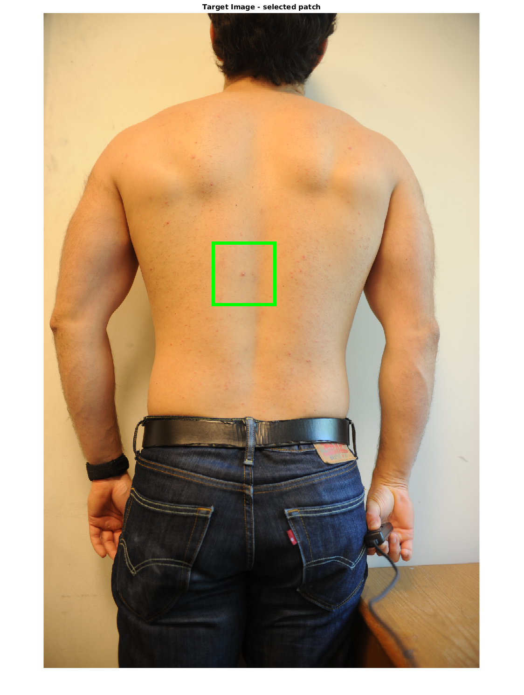
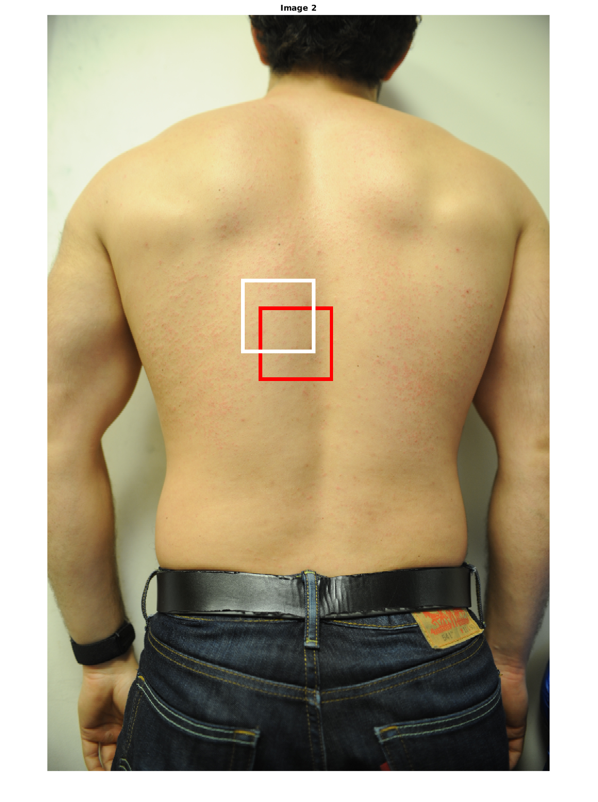
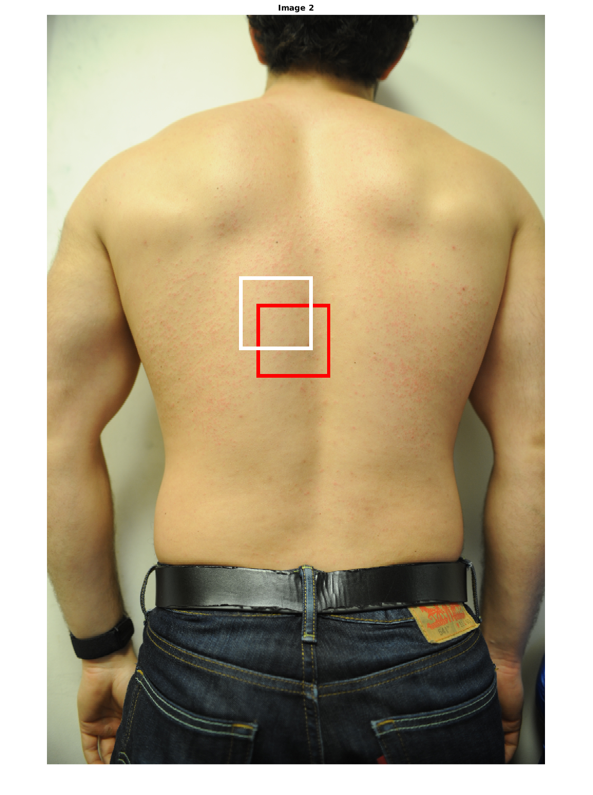
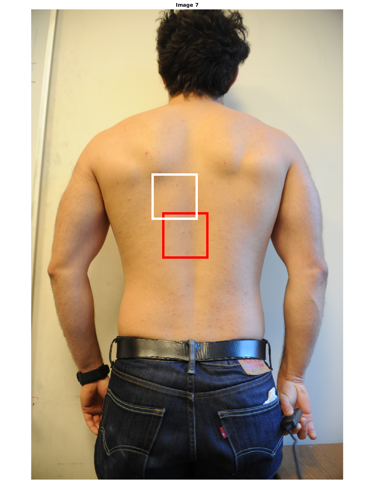
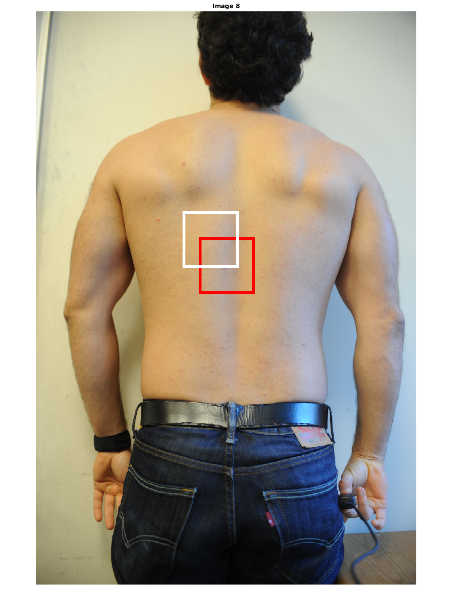
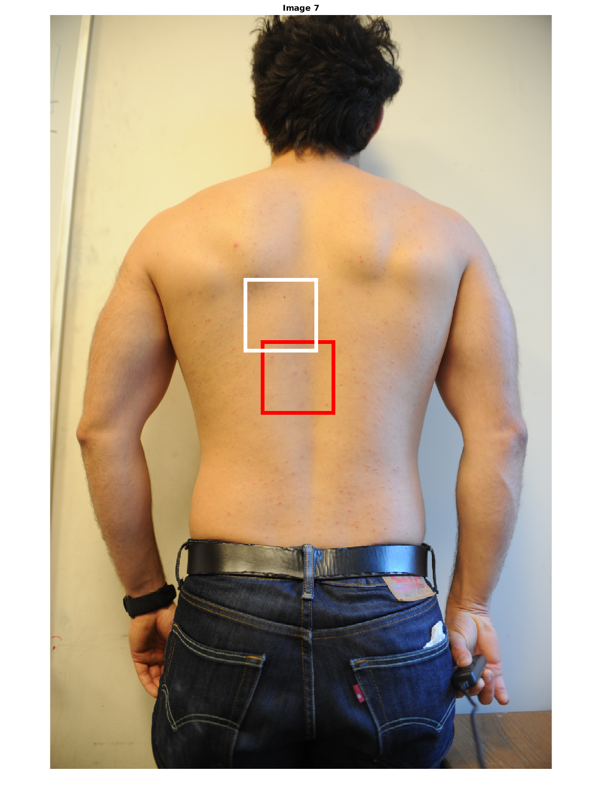
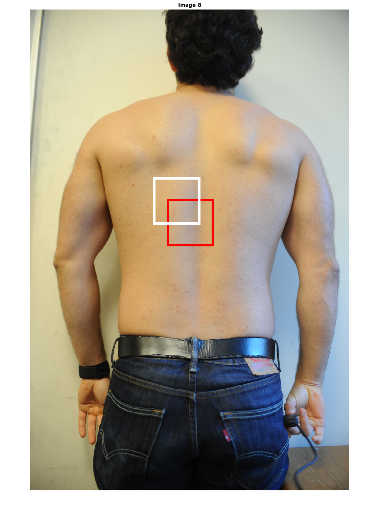

Contents
- Full System Pipeline
- Setup
- Load N Images
- Get Correspondences
- Spring-Mass Engine
- Save Results
- Visualize Correspondences
- Analyze Correspondences (delete this)
- Visualize Registered Images with Correspondences
- Show images with matching patches, & analyze the integrity of each patch
- Create a movie from the new patches
%
Full System Pipeline
1. Load N Images & Choose 1 Target 2. Obtain correspondences between sources and target 3. Spring-mass registration of each pair 4. Select ROI (possibly manually) 5. Display image ROIs across time
clc close all clear all
Setup
% Useful Inline Functions cellfunc = @(f, c) cellfun(f, c, 'UniformOutput', false); cellfunc2 = @(f, c1, c2) cellfun(f, c1, c2, 'UniformOutput', false); SA_imresize = @(x) imresize(x, 0.5); SA_imrotate = @(x) imrotate(x, 90); makeFullScreen = @(f) f.set('units', 'normalized', 'outerposition', [0 0 1 1]); makeQuarterScreen = @(f) f.set('units', 'normalized', 'outerposition', [0 0 0.5 0.5]); makeHalfScreen = @(f) f.set('units', 'normalized', 'outerposition', [0 0 1 0.5]); % Images used imgs = { '/media/esteva/ExtraDrive1/ThrunResearch/NikonD3Data/3-27-2015/4pm/DSC_7771.JPG' '/media/esteva/ExtraDrive1/ThrunResearch/NikonD3Data/3-27-2015/8pm/DSC_7777.JPG' '/media/esteva/ExtraDrive1/ThrunResearch/NikonD3Data/3-28-2015/9am/DSC_7781.JPG' '/media/esteva/ExtraDrive1/ThrunResearch/NikonD3Data/3-29-2015/DSC_7813.JPG' '/media/esteva/ExtraDrive1/ThrunResearch/NikonD3Data/3-30-2015/DSC_7821.JPG' '/media/esteva/ExtraDrive1/ThrunResearch/NikonD3Data/4-1-2015/DSC_7903.JPG' % not all of me is in images '/media/esteva/ExtraDrive1/ThrunResearch/NikonD3Data/4-6-2015/DSC_7952.JPG' '/media/esteva/ExtraDrive1/ThrunResearch/NikonD3Data/4-7-2015/DSC_7964.JPG' % Set target to one of these two '/media/esteva/ExtraDrive1/ThrunResearch/NikonD3Data/4-9-2015/DSC_7984.JPG' % % '/media/esteva/ExtraDrive1/ThrunResearch/NikonD3Data/4-11-2015/DSC_7989.JPG' }; img_target = '/media/esteva/ExtraDrive1/ThrunResearch/NikonD3Data/4-11-2015/DSC_7989.JPG'; % Add to Path functions that are needed addpath(genpath('vlfeat')) % handles dense sift addpath(genpath('functions')) % small library of my own % Save into this folder savedir = 'SystemAlignmentData'; % Saved Data % data1 contains results from dense sift, removing small matches % data2 contains results from dense sift, removing small matches and anything bigger than mean(n)+3*std(n), % where n is a vector of the correspondence distances for a source-target image pair savefile = [savedir '/data2.mat']; savemovie = [savedir '/data2_movie.avi']; % Run the engine (60 minutes). Only if it hasn't been run for this case before. Otherwise load up the data if(~exist(savefile, 'file'))
Load N Images
% Load imgs = cellfunc(@imread, imgs); img_target = imread(img_target); % Resize for ease imgs = cellfunc(SA_imresize, imgs); img_target = SA_imresize(img_target); % Set images upright imgs = cellfunc(SA_imrotate, imgs); img_target = SA_imrotate(img_target); % % Display them % for i = 1:length(imgs) % figure; imshow(imgs{i}); title(num2str(i)); % end % figure; imshow(img_target); title('target');
Get Correspondences
% Dense SIFT binSize = 20; stepSize = 10; dsiftcorrs = @(img) getDenseSiftCorrespondences(single(rgb2gray(img)), single(rgb2gray(img_target)), binSize, stepSize); corrs = cellfunc(dsiftcorrs, imgs); % Head position % Manual?
Spring-Mass Engine
grid_density = 'fine';
engine = @(img, c) SystemAlignment_Engine(c, img, img_target, grid_density);
[vFields, imgs_new] = cellfunc2(engine, imgs, corrs);
Save Results
mkdir(savedir);
save(savefile, 'imgs', 'img_target', 'vFields', 'imgs_new', 'corrs');
else load(savefile) end
Warning: Function cummax has the same name as a MATLAB builtin. We suggest you rename the function to avoid a potential name conflict. Warning: Function det has the same name as a MATLAB builtin. We suggest you rename the function to avoid a potential name conflict. Warning: Function cummax has the same name as a MATLAB builtin. We suggest you rename the function to avoid a potential name conflict. Warning: Function det has the same name as a MATLAB builtin. We suggest you rename the function to avoid a potential name conflict.
Visualize Correspondences
% for i = 1:length(corrs) % c = corrs{i}; % f = figure; % showMatchedFeatures(imgs{i}, img_target, c(:,1:2), c(:,3:4)); % title(['Image ' num2str(i)]); % makeQuarterScreen(f); % end % pause(1.0);
Analyze Correspondences (delete this)
% for i = 1:length(corrs) % c = corrs{i}; % n = sqrt((c(:,1) - c(:,3)).^2 + (c(:,2) - c(:,4)).^2); % Distance between correspondences % f = figure; hist(n); makeQuarterScreen(f); % title(['Hist ' num2str(i)... % ' mu=' num2str(mean(n))... % ' std=' num2str(std(n))... % ' ub=' num2str( mean(n) + 3*std(n) )]); % end
Visualize Registered Images with Correspondences
for i = 1:length(imgs_new) c = corrs{i}; f = figure('Name', ['Image ' num2str(i)]); subplot(1,5,1); imshow(imgs{i}); subplot(1,5,2); imshow(imgs_new{i}); subplot(1,5,3); showMatchedFeatures(imgs{i}, img_target, c(:,1:2), c(:,3:4)); subplot(1,5,4); imshowpair(imgs{i}, img_target); subplot(1,5,5); imshowpair(imgs_new{i}, img_target); makeHalfScreen(f); pause(0.5); end

Show images with matching patches, & analyze the integrity of each patch
close all
% Get point of interest from user % f = figure; % imshow(img_target); title('Target Image - select point to analyze'); % [yUser, xUser] = ginput(1); % close(f); % yUser = round(yUser); % xUser = round(xUser); % big acne point in mid back yUser = 652; xUser = 849; % Display Target w/ Patch w = 200; figure; displayImageWithPatches(img_target, {[yUser, xUser]}, {w}, {uint8([0 255 0])}); title('Target Image - selected patch'); % Display registered patch on all the images getpatch = @(im, xx, yy, ww) im( round(xx - ww/2) : round(xx + ww/2) , round(yy - ww/2) : round(yy + ww/2), :); patches_reg = {}; patch_target = getpatch(img_target, xUser, yUser, w); for i = 1:length(imgs_new) v = vFields{i}; x = v(xUser, yUser, 1); y = v(xUser, yUser, 2); patches_reg{i} = getpatch(imgs{i}, x, y, w); patches_unreg{i} = getpatch(imgs{i}, xUser, yUser, w); % Figure: Patch on Image centers = {[y x] , [yUser xUser]}; clrs = { uint8([255 0 0 ]), uint8([255 255 255 ]) }; figure; displayImageWithPatches(imgs{i}, centers, {w, w}, clrs); title(['Image ' num2str(i)]); % Figure: Patch Analysis f = figure('Name', ['Image ' num2str(i)]); subplot(2,4,1); imshow(patches_reg{i}); title('Source Patch - Matched'); subplot(2,4,2); imshow(patch_target); title('Target Patch'); subplot(2,4,3); imshowpair(patches_reg{i}, patch_target); title('Overlay'); subplot(2,4,4); imshow(rgb2gray(abs(patches_reg{i} - patch_target)*2)); title('Difference'); subplot(2,4,5); imshow(patches_unreg{i}); title('Source Patch - Raw'); subplot(2,4,6); imshow(patch_target); title('Target Patch'); subplot(2,4,7); imshowpair(patches_unreg{i}, patch_target); title('Overlay'); subplot(2,4,8); imshow(rgb2gray(abs(patches_unreg{i} - patch_target)*2)); title('Difference'); makeQuarterScreen(f); end pause(1.0);
Warning: Image is too big to fit on screen; displaying at 67% Warning: Image is too big to fit on screen; displaying at 67% Warning: Image is too big to fit on screen; displaying at 67% Warning: Image is too big to fit on screen; displaying at 67% Warning: Image is too big to fit on screen; displaying at 67% Warning: Image is too big to fit on screen; displaying at 67% Warning: Image is too big to fit on screen; displaying at 67% Warning: Image is too big to fit on screen; displaying at 67% Warning: Image is too big to fit on screen; displaying at 67% Warning: Image is too big to fit on screen; displaying at 67%

 
 


  
  
Create a movie from the new patches
close all
for i = 1:length(patches_reg) F(i) = im2frame(patches_reg{i}); end figure; movie(F, 2); movie2avi(F, savemovie, 'compression', 'None', 'FPS', 1);